User Manual
FeastFleet
Intelligent Hyperlocal Food Delivery Platform
with AI Culinary Services
Software Architecture & Engineering
Academic Year 2025–26
Team Members
| Name | Role | Roll Number |
|---|
| Abhinav Babu | Developer | ________________ |
| ________________ | ________________ | ________________ |
| ________________ | ________________ | ________________ |
| ________________ | ________________ | ________________ |
Table of Contents
- Introduction
- System Requirements
- Installation / Setup
- User Login / Registration
- System Features / Functionalities
- Navigation
- Input and Output
- Error Handling / Messages
- Logout / Exit
- Troubleshooting / FAQ
- Appendix — Screenshot Index
Screenshot placeholders: The marked figure boxes are intentionally blank. Insert screenshots of the implemented system into these boxes before final submission.
1. Introduction
1.1 Brief description of the software product
FeastFleet is a full-stack web application for ordering food from nearby restaurants, with a focus on Kerala / hyperlocal delivery. Users can browse restaurants, view menus, add dishes to a cart, place orders, and follow a live delivery timeline. The product also includes AI-assisted tools: a personal food agent, budget optimizer, food memory profile, visual food search, group-order planner, ingredient/allergen predictions, and FeastBot (a floating chatbot).
The frontend is a multi-page HTML/CSS/JavaScript interface. The backend is an Express.js REST API with JWT authentication and MongoDB (or an automatic in-memory MongoDB fallback for demos).
1.2 Purpose of the system
The system is designed to:
- Let customers discover restaurants and dishes and complete an order in a few steps.
- Show proximity (distance and estimated time) based on a set delivery location.
- Keep cart items consistent by limiting multi-restaurant carts to a 1 km radius.
- Help users choose food using budget, diet, group, and allergen constraints.
- Provide order history and live tracking after checkout.
1.3 Intended users
| User type | How they use FeastFleet |
|---|
| Customers / end users | Register or sign in, search restaurants, order food, track delivery, contact support. |
| Demo / evaluators | Use 1-click demo login, walk through AI tools, and inspect the running API. |
| Developers / testers | Install Node.js, start the server, and exercise frontend + REST endpoints. |
2. System Requirements
2.1 Hardware requirements
| Item | Minimum | Recommended |
|---|
| Processor | Dual-core CPU | Quad-core or better |
| RAM | 4 GB | 8 GB or more |
| Disk space | ~300 MB for project + Node modules | 1 GB free |
| Display | 1366 × 768 | 1920 × 1080 (desktop) |
| Network | Localhost is enough for demo | Internet for CDN (Bootstrap, icons, some images) |
2.2 Software requirements
- Node.js 18 or later (includes npm)
- Optional: MongoDB Community Server. If MongoDB is not installed, the server starts
mongodb-memory-server automatically.
- Git (optional, for cloning the repository)
2.3 Browser / platform requirements
- Supported browsers: Google Chrome, Microsoft Edge, Firefox, or Safari (latest two versions).
- OS: Windows 10/11, macOS, or Linux.
- JavaScript must be enabled. A modern browser is required for geolocation UI, localStorage, and fetch APIs.
- Default URL:
http://localhost:5000 (port 5000 unless PORT is set in the environment).
3. Installation / Setup
These steps start FeastFleet on the local machine for demonstration or academic evaluation.
- Install Node.js from
https://nodejs.org and confirm in a terminal: node -v and npm -v.
- Open the project folder (example):
feastfleet.
- Install dependencies:
npm install.
- Start the application:
npm start.
- Wait until the console prints that the FeastFleet server is running on port 5000.
- Open a browser and go to
http://localhost:5000 (or http://localhost:5000/index.html).
Optional seed: npm run seed loads restaurant/menu data into MongoDB. The in-memory database used for demos is seeded as part of a normal start when configured that way; if the catalog looks empty, run seed and restart.
Access without a full install: HTML files can be opened directly, but login, AI APIs, and order sync need the Express server. Always use npm start for a complete demo.
On first load you should see the brand splash screen, then the home storefront.
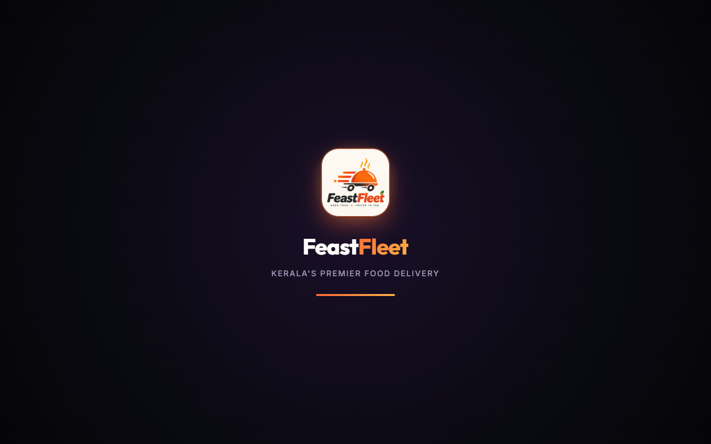
Figure 1. Splash screen shown for about 2.5 seconds at launch.
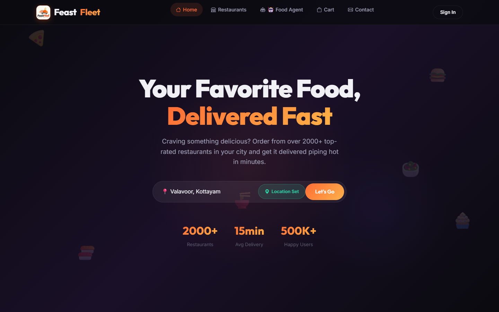
Figure 2. Home page after the splash animation.
4. User Login / Registration
Open Sign In from the top-right of the navbar, or go to login.html.
4.1 Sign in (existing account)
- Keep the Sign In tab active.
- Enter email, username, or mobile in Email / Username / Mobile.
- Enter the password (minimum 6 characters on the server).
- Click Sign In.
- On success you see a welcome message and are redirected to Home. The navbar shows your initials instead of Sign In.
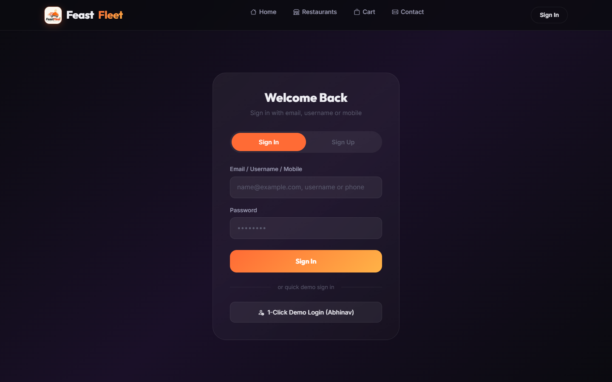
Figure 3. Sign In form.
Demo login (recommended for review): click 1-Click Demo Login (Abhinav). Demo account:
- Name: Abhinav Babu
- Email:
abhinav@feastfleet.com
- Password:
password123
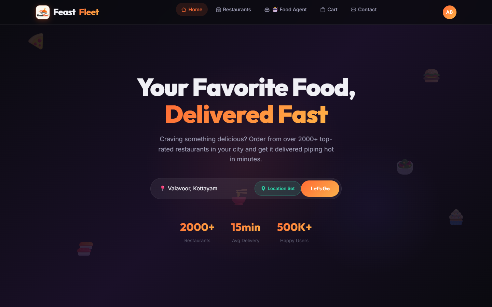
Figure 4. Home page after a successful sign-in (profile avatar on the right).
4.2 Registration (new account)
- Click the Sign Up tab.
- Enter Full Name, Mobile Number (+91), Email Address, and Password.
- Click Create Account / Send OTP & Create Account.
- Enter any 4-digit OTP (demo mode). The account is created and you are signed in.
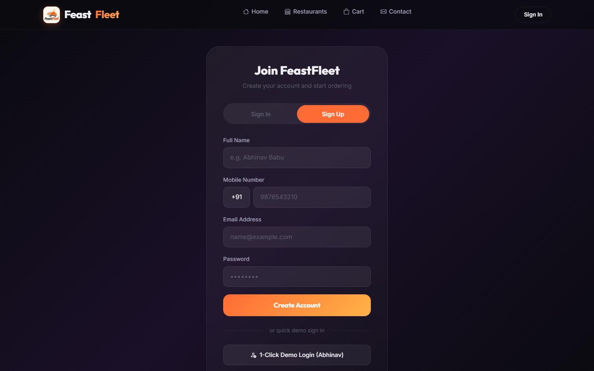
Figure 5. Sign Up form.
If the API is unreachable, the page still signs you in locally so the rest of the demo can continue.
5. System Features / Functionalities
5.1 Set delivery location
- On Home, use the address field or click Detect My Location / location control.
- For this build, detection sets Valavoor, Kottayam.
- Restaurant cards then show distance (km) and estimated time.
Expected result: location label updates; nearby restaurants (for example AK Take Away, Pala) appear closer than Kochi outlets.
5.2 Browse restaurants
- Click Restaurants in the navbar, or Let’s Go from the home search.
- Use cuisine chips (All, Burgers, Asian, Indian / Kerala, Desserts, and similar) to filter.
- Click a restaurant card to open its menu. AK Take Away, Pala opens a dedicated menu page.
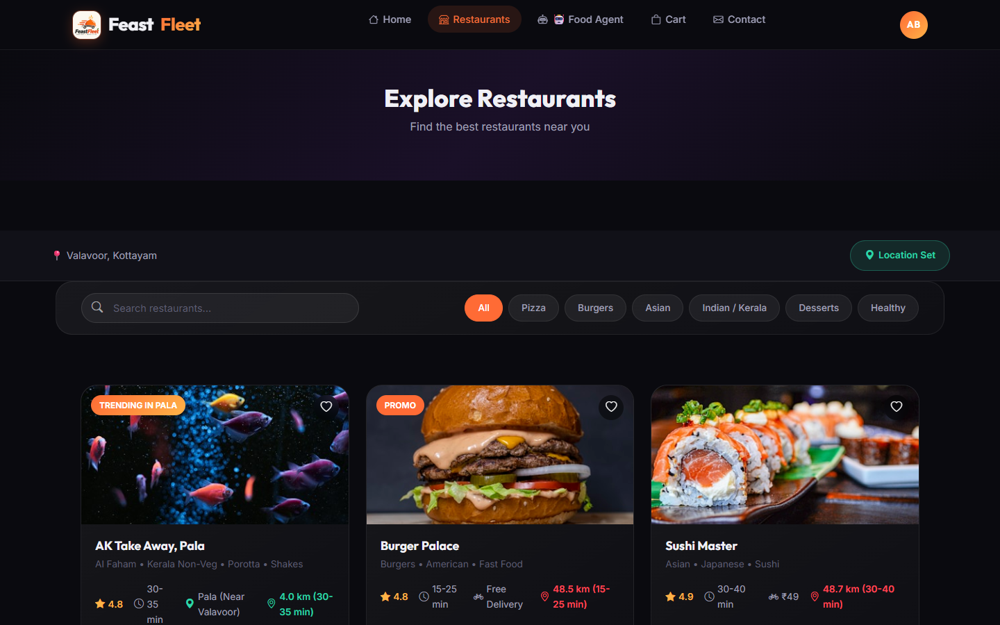
Figure 6. Restaurant catalog.
5.3 View menu and add items
- Open a restaurant (example: AK Take Away, Pala).
- Filter by category chips (Al Faham, Kerala Non-Veg, Vegetarian, Rice & Biryani, and so on).
- Click the orange + button on a dish to add it to the cart.
- The cart badge in the navbar increases.
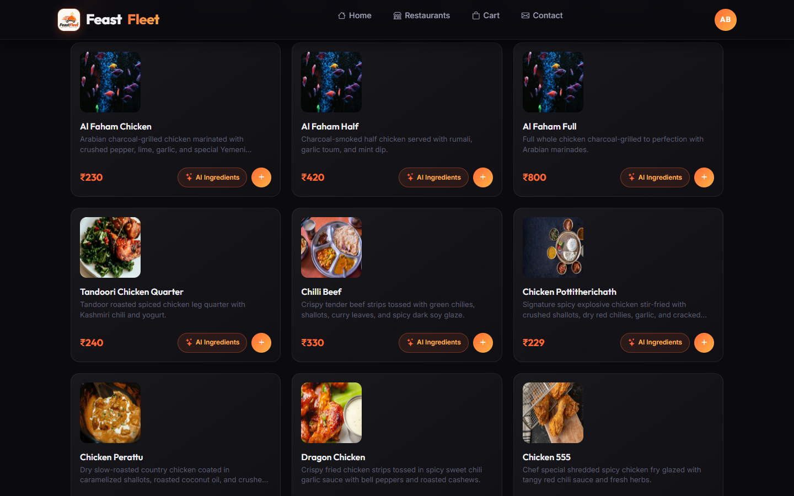
Figure 7. Menu with prices, AI Ingredients, and add-to-cart controls.
5.4 AI ingredient and allergen prediction
- On a dish card, click AI Ingredients.
- Read predicted ingredients, dietary notes, flavor notes, match %, and allergen warnings.
- Optionally click Ask AI Chatbot, or Done to close.
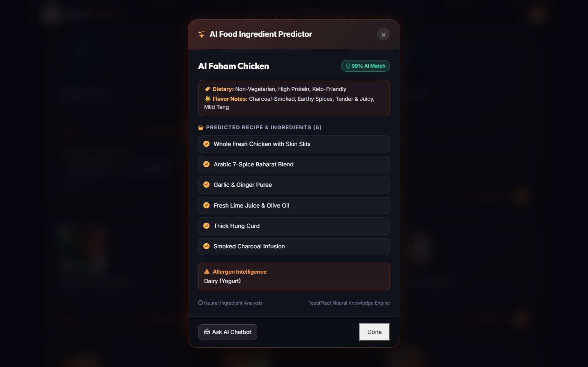
Figure 8. AI Food Ingredient Predictor for Al Faham Chicken.
5.5 Cart and checkout
- Open Cart from the navbar.
- Change quantity with − / +, or delete an item.
- Optional: enter a promo code and click Apply.
- Review subtotal, delivery fee (typically ₹49 in the cart summary), and total.
- Click Place Order.
Expected result: cart clears, you are taken to live tracking, and the last order is stored for this browser session.
Items from a second restaurant are allowed only if that restaurant is within 1 km of restaurants already in the cart. Otherwise a warning toast is shown and the item is not added.
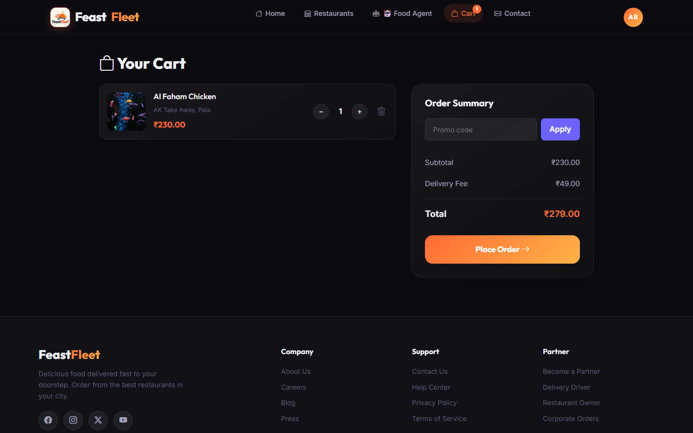
Figure 9. Cart with order summary and Place Order.
5.6 Live order tracking
- After placing an order, the tracking page opens automatically, or choose Track Live Order from the profile menu.
- Watch stages: Confirmed → Preparing → On The Way → Delivered.
- The countdown and rider card update in real time. Leaving and returning does not reset the timer to the full duration.
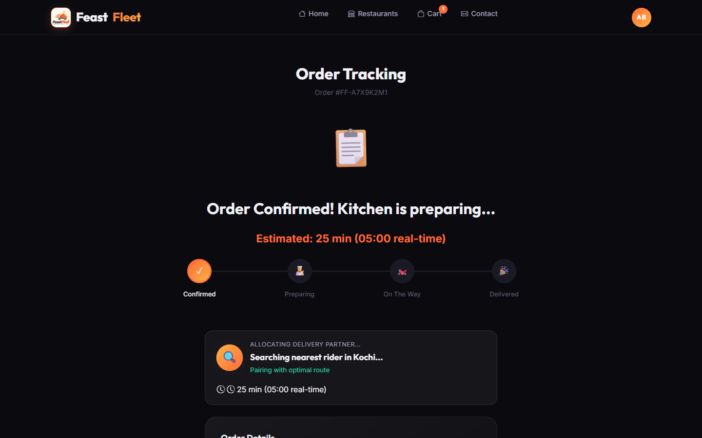
Figure 10. Live tracking timeline and rider allocation.
5.7 Order history
- Open the profile avatar → Order History (
orders.html).
- Logged-in users see orders associated with their account when the API is available.
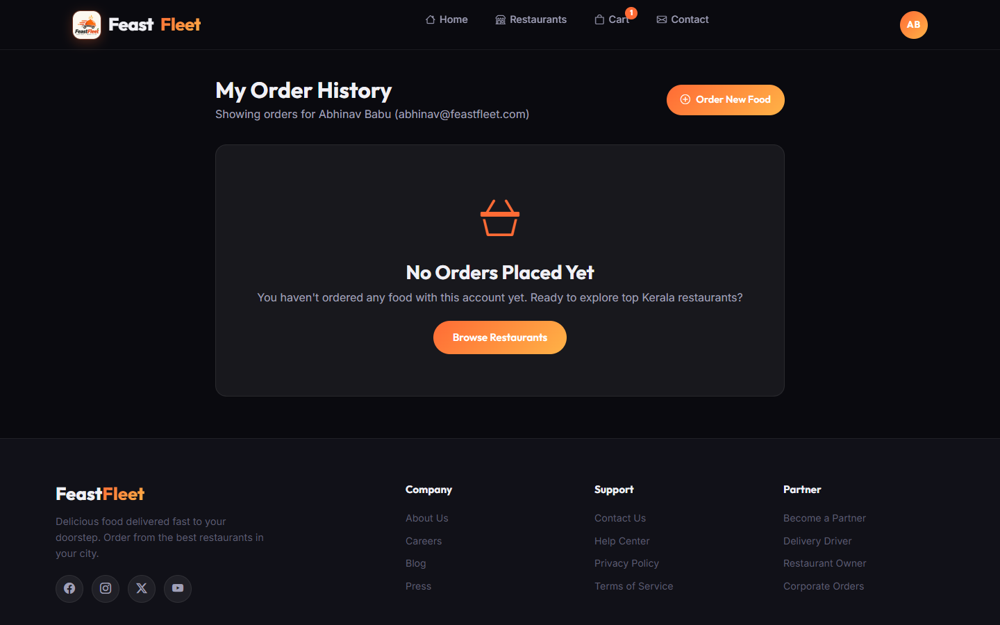
Figure 11. Order history.
5.8 Personal Food Agent
- From Home, open Personal Food Agent (or navbar Food Agent).
- Set budget, mood tags (spicy, grilled, etc.), diet, exclusions, and cuisine.
- Run the agent to get a constrained meal suggestion that can be added to the cart.
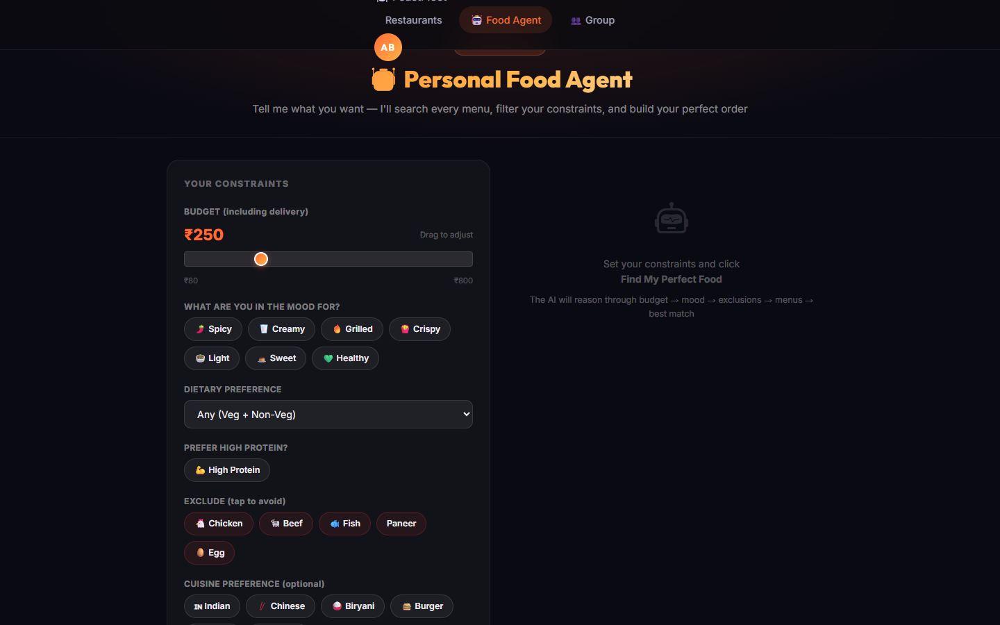
Figure 12. Personal Food Agent constraints panel.
5.9 Budget optimizer
- Open Budget Optimizer from Home.
- Enter group size, total budget, and meal preferences.
- Run optimize to get a combination of dishes that fits price and delivery constraints.
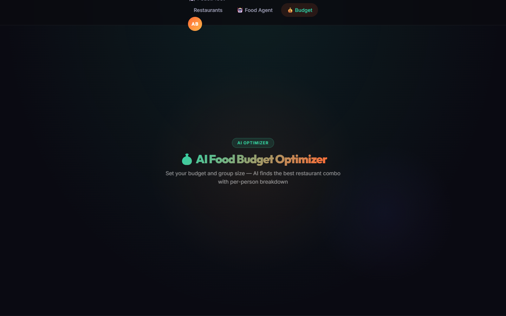
Figure 13. Budget Optimizer.
5.10 Food memory profile
- Open Food Memory Profile.
- Review patterns built from previous orders in this browser (weekday habits, price band, repetition).
- Use suggested variations when the profile recommends a change of dish.
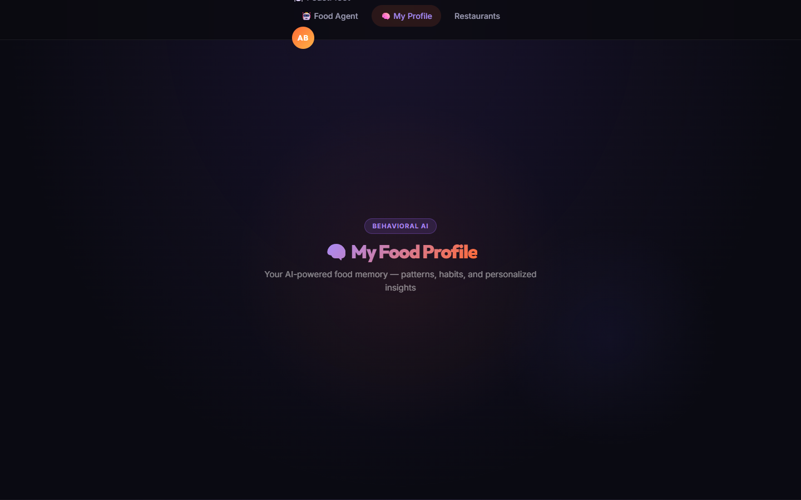
Figure 14. Food Memory Profile.
5.11 Visual food search
- Open See Food → Find Food.
- Upload a food photo or pick a visual category.
- The system matches nearby menu items and lists the closest dishes to order.
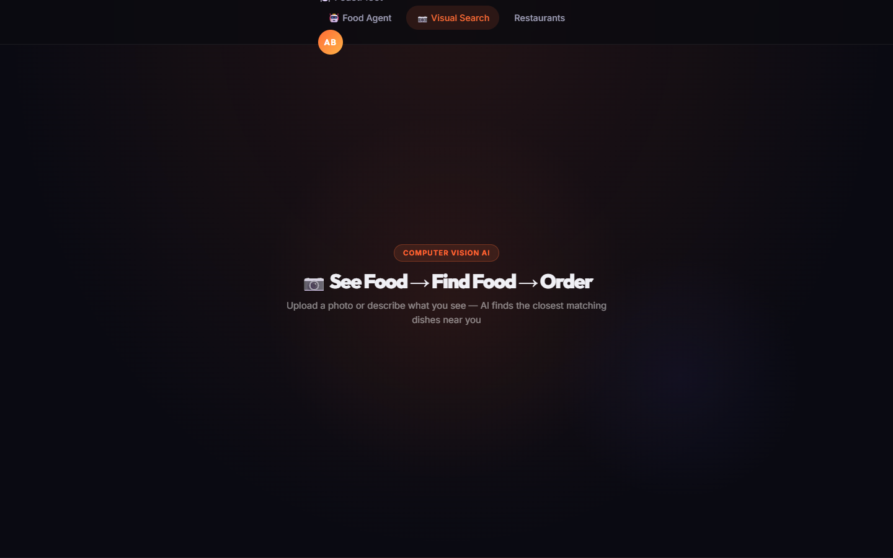
Figure 15. Visual food search.
5.12 AI group order
- Open AI Group Order Agent.
- Set total group budget and maximum delivery time.
- For each person, enter name, food preference, diet, per-person budget, and optional exclusions.
- Add or remove members, then run the agent.
- Output: one recommended restaurant, a dish per person, and a per-person split. You can send the plan to the cart.
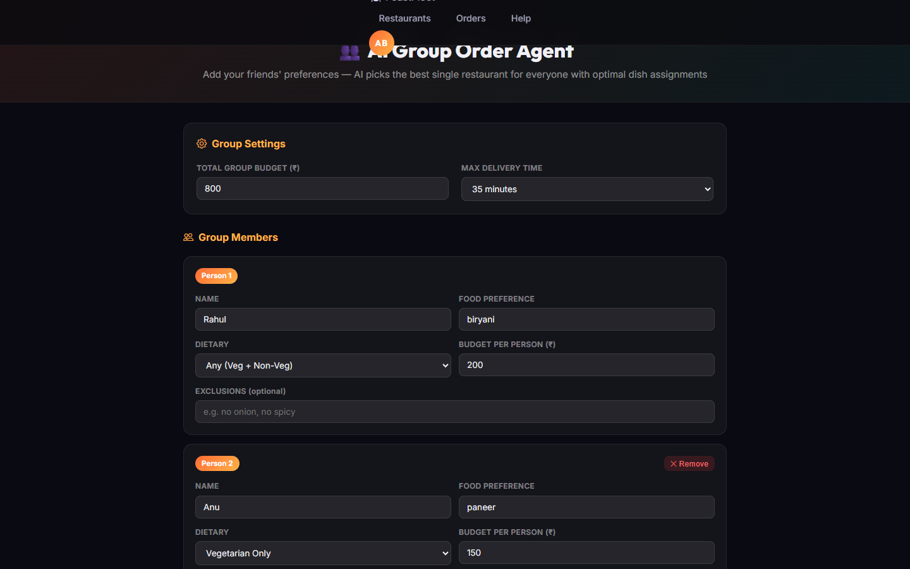
Figure 16. Group Order Agent with sample members.
5.13 FeastBot chatbot
- If the panel is minimized, click the circular FeastBot button (bottom-right).
- Use quick replies (Track Order, Food Agent, Budget Optimizer, etc.) or type a question.
- Minimize with the header control when you need the full page.
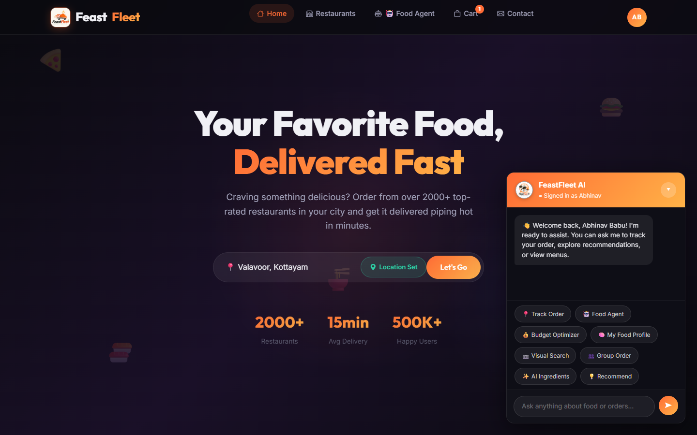
Figure 17. FeastBot assistant on the home page.
5.14 Contact and support
- Open Contact.
- Fill name, email, subject, and message, then Send Message.
- Use listed email
support@feastfleet.com, phone +91 484 123 4567, or the FAQ accordion on the same page.
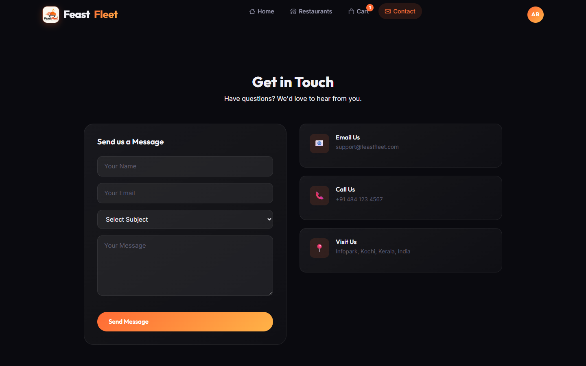
Figure 18. Contact form and support details.
6. Navigation
Primary movement is through the top navbar. On narrow screens, open the hamburger menu to reach the same links.
| Control | Goes to |
|---|
| Logo / Home | Storefront (index.html) |
| Restaurants | Restaurant catalog |
| Food Agent | Personal Food Agent (when shown) |
| Cart (with badge) | Cart and checkout |
| Contact | Support form and FAQ |
| Sign In | Login / registration |
| Profile avatar (after login) | Order History, Track Live Order, My Cart, Support, Log Out |
| Home AI cards | Agent, Budget, Food Profile, Visual Search, Group Order |
| Restaurant card | That restaurant’s menu |
| Place Order | Tracking page |
| FeastBot quick replies | Matching tool or tracking conversation |
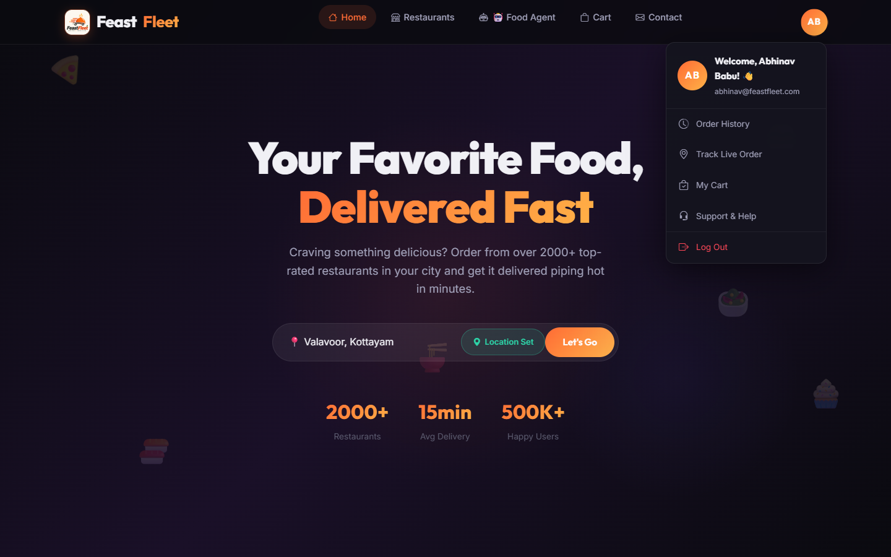
Figure 19. Profile menu used to jump between orders, tracking, cart, support, and logout.
7. Input and Output
| Screen | Important inputs | Expected output |
|---|
| Login | Identity + password | Session, avatar, redirect to Home |
| Sign Up | Name, phone, email, password, 4-digit OTP | New account and signed-in session |
| Home location | Address or Detect Location | Location label; distance badges on restaurants |
| Menu | Category filter; + to add; AI Ingredients | Cart badge; ingredient modal |
| Cart | Qty, delete, promo, Place Order | Updated totals; tracking page |
| Tracking | (none after order) | Status steps, ETA, rider card |
| Food Agent | Budget, mood, diet, exclusions | Recommended dishes within constraints |
| Budget Optimizer | People count, budget, cuisine | Priced combo within budget |
| Group Order | Members, diets, budgets, max delivery time | One restaurant, assigned dishes, split |
| Visual Search | Photo or category | Matching menu items |
| Contact | Name, email, subject, message | Success toast that the message was sent |
8. Error Handling / Messages
| Message / situation | Cause | What the user should do |
|---|
| “Please fill in all required fields” | Empty identity or password | Complete the form and submit again. |
| “Please enter your full name / username” | Sign up without a name | Enter full name. |
| “Invalid credentials” | Wrong email/mobile or password | Recheck details or use demo login. |
| “User already exists” | Email already registered | Sign In instead of Sign Up. |
| Password too short (server) | Password under 6 characters | Choose a longer password. |
| Toast: restaurant is X km from another, must be within 1 km | Multi-restaurant cart rule | Finish the first restaurant’s order, or pick a closer second restaurant. |
| Empty cart: “Your cart is empty” | No items added | Browse restaurants and add dishes. |
| Place Order does nothing | Cart still empty | Add at least one item. |
| Group order alert: add at least one member | No member cards | Add a member and run again. |
| API / network failure | Server not running | Start npm start. Auth may still work in local demo mode. |
| 401 session cleared | Expired or invalid token | Sign in again. |
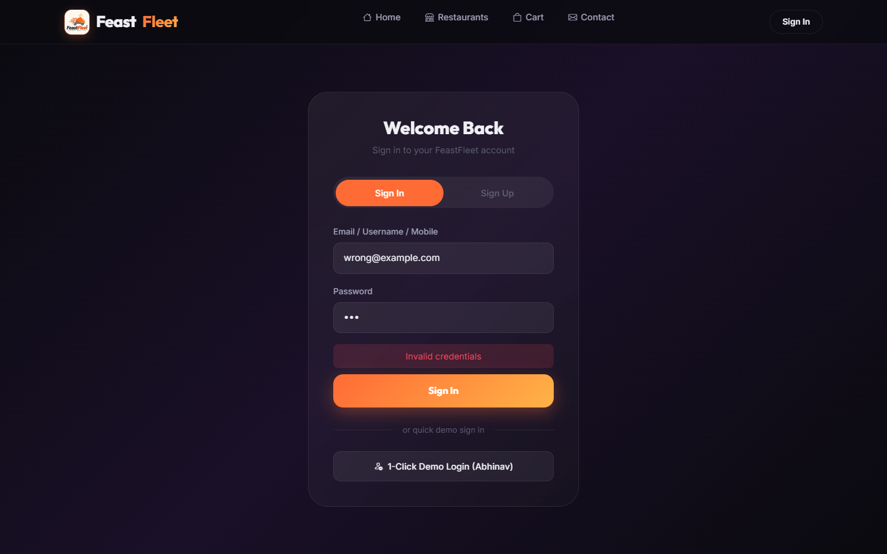
Figure 20. Invalid credentials shown after a failed sign-in.
9. Logout / Exit
- Click the circular profile avatar (initials) at the top right.
- Click Log Out (red item at the bottom of the menu).
- The token and stored user are removed. The navbar returns to Sign In and you are sent to Home.
To leave the application entirely, close the browser tab. Stopping the backend: in the terminal where the server is running, press Ctrl+C.
Logging out does not always wipe the cart in localStorage. If you share a computer, also clear the cart or use a private window.
10. Troubleshooting / FAQ
| Problem | Solution |
|---|
| Page will not load / connection refused | Confirm npm start is running and visit http://localhost:5000, not a random Live Server port, if the API must work. |
| Port 5000 already in use | Stop the other process or set environment variable PORT to another value and use that URL. |
| MongoDB not installed | No action required for a typical demo; in-memory MongoDB starts automatically. |
| Images or Bootstrap look broken | Connect to the internet so CDNs can load, or refresh after the network is up. |
| Location never changes from Valavoor | This demonstration build is configured to Valavoor, Kottayam for a consistent review. |
| Cannot add a second restaurant | Respect the 1 km cart radius, or place the first order first. |
| Tracking timer looks “stuck” after refresh | It continues from elapsed time; it does not restart at 5 minutes. |
| Chatbot covers the page | Click the minimize (▾) control on the FeastBot header. |
| How do I track an order? | Place an order, or open profile → Track Live Order, or ask FeastBot “Track my order”. |
| What payment methods? | Described on Contact FAQ as cash, cards, and Apple Pay (demonstration copy). |
11. Appendix — Screenshot Index
Use the following screenshot list when filling the placeholders. Capture each view from the implemented system at http://localhost:5000 and keep the final images in docs/screenshots/.
- 01-splash.png — Launch splash
- 02-home.png — Home
- 03-login.png — Sign In
- 04-register.png — Sign Up
- 05-login-error.png — Invalid credentials
- 06-home-logged-in.png — Authenticated home
- 07-profile-menu.png — Profile / logout menu
- 08-restaurants.png — Restaurant list
- 09-menu-ak.png — AK Take Away menu
- 10-ai-ingredients.png — Ingredient predictor
- 11-cart.png — Cart
- 12-tracking.png — Live tracking
- 13-orders.png — Order history
- 14-ai-agent.png — Food Agent
- 15-budget-optimizer.png — Budget Optimizer
- 16-food-profile.png — Food Memory
- 17-visual-search.png — Visual search
- 18-group-order.png — Group Order Agent
- 19-contact.png — Contact
- 20-chatbot.png — FeastBot